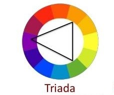
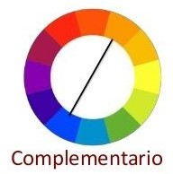
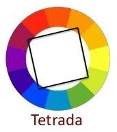
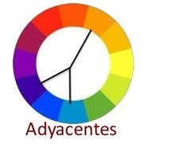
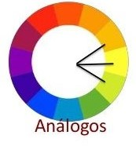
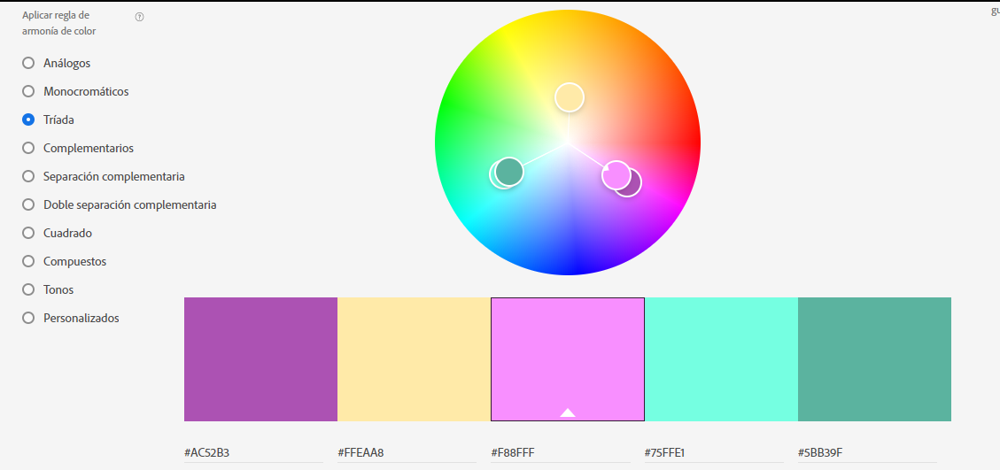
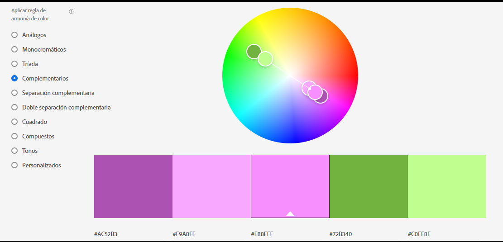
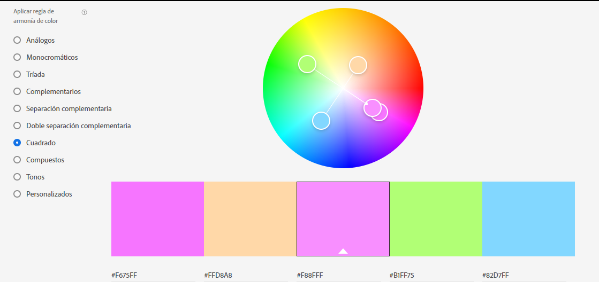
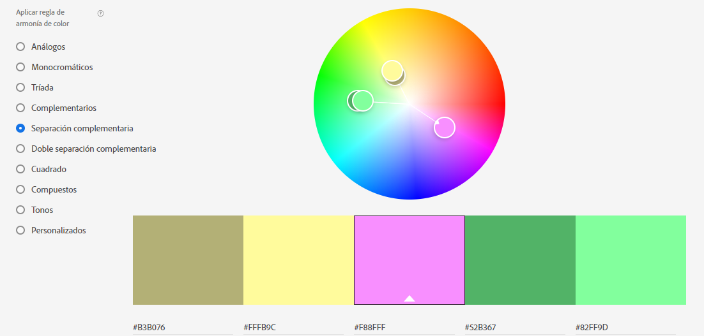
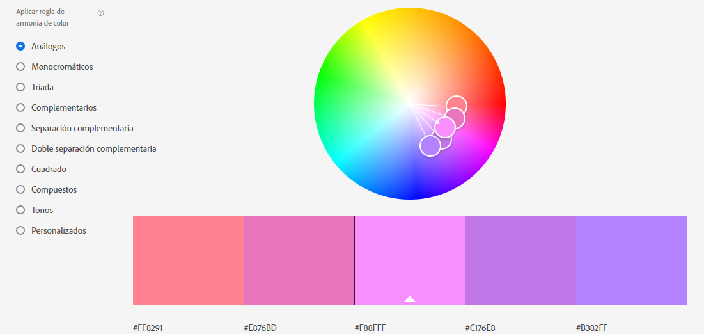

A muchos de nosotros nos gustaría mejorar el diseño de nuestros apuntes digitales en esta época de contingencia.
Aquí encontrarás tutoriales, imágenes de inspiración, combinaciones de colores, tipografías, entre otras cosas.
TipografíasUna de las páginas que te recomiendo para descargar tipografías es DaFont . En este sitio web encontrarás infinidad de tipografías dividas en categorías como Fantasía, aspecto extranjero, tecno, bitmap, gótico, básico, holiday, etc. Además, es un sitio gratuito, que te permite instalar en Windows 7/8/Vista o en Mac OS X. Un tip que yo recomiendo es que escribas en el buscador alguna palabra muestra y a continuación esa palabra aparecerá en diferentes tipografías. Para poder descargar una fuente debes de extraer el archivo comprimido y dar clic derecho en la fuente y a continuación presionar Instalar
Las decoraciones son aquellos elementos que le darán el toque a nuestros trabajos, de estas depende su presentación. Una de los elementos que pueden ocupar son las Acuarelas , para poder ocuparlas, escribiremos en el buscador de Google Acualeras.png, ya que la imagen no tendrá fondo. Otra de las ideas a ocupar, es la del Papel Kraft. De igual manera buscado Papel Kraft.png También puede buscar otros tipos de papel o de texturas según tus gustos o el toque que le quieras dar a tus apuntes.
Los cuadros de texto son los mejores para poder escribir la información de tu trabajo, ya que te esta manera puedes mover el texto a cualquier lugar del documento, además de que podrás agregar un marco al cuadro de texto. Aunque también puede agregar otras figuras tales como triángulos, pentágonos, hexágonos, entre otros para darle estilo a tu trabajo.
Para enviar, imprimir, o subir tu archivo es recomendable que lo guardes en formato de PDF puesto que a la hora de imprimir los elementos de tu trabajo no se moverán y al enviar tu trabajo a otra persona que no tenga las fuentes que tu tienes, esta persona podrá ver tu trabajo.
Los colores en nuestros apuntes deben de tener un relación armoniosa y deben de seguir la teoría del color o la también llamadas "Relación de color", de esta manera tus apuntes serán vistosos y tendrán buena estética.
|  |  |  |  |  |
| Un esquema de color tríadico utiliza tres colores equidistantes alrededor de la rueda de color. | Los colores complementarios son colores que están justo enfrente uno del otro en la rueda de color. | La tétrada utiliza cuatro colores que se encuentran a la misma distancia en el círculo cromático. | Los colores adyacentes son aquellos que se encuentran en una relación de vecindad dentro del círculo cromático. | Los colores análogos son tres colores que están uno al lado del otro en la rueda de color. |
|  |  |  |  |  |
Los siguientes enlaces te llevarán a páginas en donde puedes encontrat tipografías, elaborar esquemas y ver tutorias para mejorar tus apuntes digitales.
Dafont Canva Adobe Color Gitmind Zoho Show Visme Draw.io PiktochartEn Youtube puedes encontrar infinidad de videos y canales dedicados a los apuntes digitales, a continuación se te mostrarán algunos. Además te podrás dar cuenta que no solamente puedes hacer apuntes bonito en word si no también en Power Point.